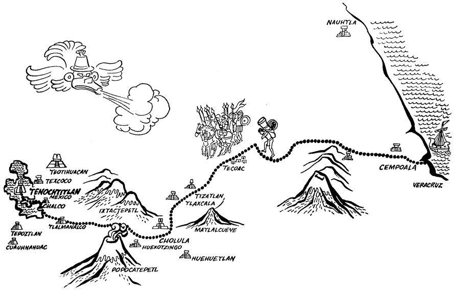
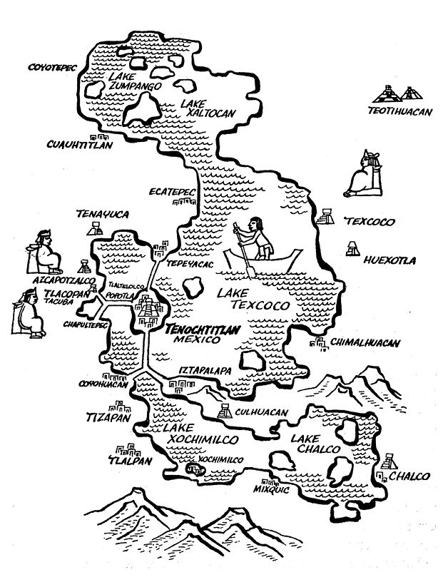
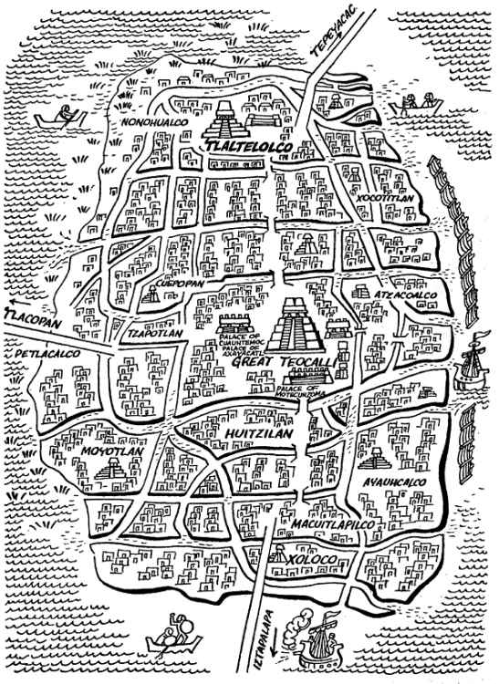

阿兹特克帝国驻华使馆
目录 |
战败者的见闻——印第安人对征服的记述 导 言
诸多新大陆的发现者和征服者撰写的编年史著作以及诸多报道和记述都对美洲的发现和征服进行了披露，这使16和17世纪的欧洲人感到讶异。因此欧洲，这一有着悠久历史的古老大陆，如饥似渴地想了解那些刚刚被航海家、探险家和征服者“发现”的“野蛮人”的生活方式。 “西印度编年史学家”所提供的资料，不管真实与否，在欧洲都引起了极大的关注。虽然有些资料引发了长时间的争论，但不管怎样，人们也没有放弃对这些史料的思考。不只是征服者和传教士，还有欧洲的学者——人文学家和真正的历史学家——都在努力地给新大陆多种多样的自然和人文现实塑造出准确的形象。 但结果却大不相同。有的人从古老的信念出发，比如，认为有些印第安人实际上是某些已经消失了的犹太部落后裔。迭戈·德·杜兰1在谈到纳瓦特尔语2世界时就持此种观点。还有的人在其记述和编撰的史书中，在某种程度上故意赞扬征服活动，例如埃尔南·科尔特斯3。有些编年史把新大陆的印第安人说成是野蛮人，是专门吃人、专事鸡奸行为的偶像崇拜者。而另一些史书则把印第安人说成是自然道德的典范。 利用美洲编年史等资料，欧洲出现了当时所独有的、在人文主义思想指导下的诸多历史著作。回忆一下闻名于世的佩德罗·玛蒂尔·德·安格莱利亚4所著的《新大陆》10卷文集就够了。该文集描述了印第安人的艺术和生活方式，作者对这些艺术和生活方式赞不绝口。还有皇家编年史作者安东尼奥·德·埃雷拉5的《世界史》，书中收集了大量关于印第安人的重要的第一手材料。总之，可以说，不仅西班牙和葡萄牙的历史著作，就连法国、英国、德国和意大利的史书在研究新大陆自然和人文方面也都显示了新的活力。 但是，在旧大陆对新大陆的事物及其居民表现出明显惊诧和关注的同时，却很少有人想到新大陆居民对旧大陆同样感到陌生，对欧洲人的到来同样引起关注，感到讶异。因为，如果说欧洲人对他们所看到的错称为“印第安人”6的生活方式有着研究的兴趣，那么，反过来说，了解欧洲人在印第安人头脑里的印象——他们的思想与我们既遥远又接近——也会引起同样的兴趣，如果不是更大的话。当看到“发现者和征服者”来到他们的海岸和村庄时，新大陆的人们，尤其是美索美洲人7、纳瓦人8、玛雅人和其他部落的人们会怎样想？对发现者和征服者的到来他们最初抱何种态度？他们怎样看待自己对欧洲人的抗争？怎样评价他们遭受的失败？  征服者路线图 的确，人们可能不会对所有的问题都得出答案。但是，起码对已经获得高度发展的印第安文化肯定会有共识。印第安人的抄本，即图画文字，与西班牙人的记述这两大部分被认为是反映征服史不同的两个方面。自然，美索美洲人的看法和西班牙人的看法大相径庭。当然，由于相互责难，互不理解在深层次上所产生的不同看法却是可以理解的人之常情。正因如此，才应不带任何偏见地进行研究。因为，摒弃憎恶和谎言而进行冷静分析会帮助人们理解现代墨西哥之源。现代的墨西哥就是两个世界激烈撞击的现实结果。9 在美索美洲，玛雅文化和纳瓦文化广泛地见证了在那里的征服活动。这两种文化都保有史书、文字和口头传说。简述这里的印第安人对这段历史的关注都能表明他们是如何坚持保留自己对征服的看法。 印第安世界对历史的关注
玛雅人和纳瓦人的石碑以及其他历史遗迹，征服前纳瓦世界用表意文字和初始的表音文字记述的历史抄本即《年书》，这些都证实了纳瓦人和玛雅人对过去所发生的重大历史事件和其他事物的关注。还有，印第安人学校使用的课本也忠实记录了过去的事情。在学校里成年人经常向学生们讲授逐年发生的事件，就像他们的抄本里记述的那样。 印第安人对保存自己历史十分重视，这里我们仅举一个不可多得的实证便可见一斑，它来自一个比任何人都更好地收集了整个16世纪关于卡斯蒂利亚人10在大洋海11各岛屿和大陆的纪事和报道而后写成的《卡斯蒂利亚人在大洋海各岛屿和大陆的活动通史》，此人便是菲利佩二世任命的官方编年史家安东尼奥·德·埃雷拉。出于对这一问题的关注，我们引用该书中的一段，此段虽长但在此摘录恐并不为过。埃雷拉在该书10卷集的第4卷第10部中写道：
新西班牙12各国对他们的过去都有所记忆：在尤卡坦和洪都拉斯有一种由单页纸汇集成册的书，书中印第安人按时间记载了他们的过去，以及他们对行星、动物和其他自然之物的知识。 在墨西哥省，他们有自己绘制的关于历史和历法方面的书籍。书中可看到他们特有的图画书籍13以及一些表意符号——表意符号看不出特定的形象。这样他们就可把想写的东西写下来了14。 为了记忆每个事件发生的时间，他们有一种图解年轮记事法，即每52年为一个周期。在这个年轮的周围，在发生事件的那一年旁边绘有上述的图形文字和书写符号。例如，在发生事件的芦苇年旁，绘有一个人戴着帽子，穿着红外套，表示在那年卡斯蒂利亚人来到了他们的土地。其他事件也用类似的方法记录。 和我们的文字不同，他们的图画文字远远不够用，不能准确记录每一个词汇，只能记录概念中有实体的东西。但是，他们经常学习歌唱、演说，经常进行交谈或吟唱诗歌，用这种方式弥补文字的不足。年轻人充满了好奇，他们希望把这些概念性的东西都能记下来。为此，印第安人开办了学校，由老年人向年轻人传授这些按照传统完整保存下来的事物。 卡斯蒂利亚人进入他们的土地之后，便开始教授印第安人写字。这样印第安人便把他们交谈的内容以及自古以来用图画文字和表意文字所记述的事件都书写了下来15，同样他们也学会书写诸如“我们的圣父”“万福玛利亚”和所有基督教的教义。16
 1519年墨西哥谷地 就这样，纳瓦人和玛雅人“极其努力”又“充满好奇”地“保存了古老的记忆”，他们不会忘记那些让人永世难忘、极具悲剧性的事件，在这方面反映的是他们自己的观点：不会忘记外来人的征服事件一举毁灭了他们古老的生活方式。此书是文字和图画的汇编本，记述了讲纳瓦特尔语各部的美索美洲人——他们是特诺奇蒂特兰人、特拉特洛尔克人、特斯科科人、查尔克人和特拉斯卡拉人——对科尔特斯和西班牙人的看法以及对征服和毁灭大城市——墨西哥-特诺奇蒂特兰17所产生的印象。 玛雅人也在做同样的工作，因为他们也有自己的记述，其中《萨伊尔纪事》18《伊斯琴·内阿依布家族史》《查克苏鲁伯村编年史》以及《契兰·巴兰》19等书籍的某些片段都能读到印第安人对征服的叙述。 现在我们要做的就是本导言所主张的：以简单扼要的方式谈论通晓纳瓦文化的人留下的文字和图画，他们中的一些人就是征服事件的见证者，他们提供的证据就是我们所说的《战败者的见闻》。
纳瓦人关于征服的记述和图画书籍
一个叫作托里维奥·德·贝纳文特、绰号“莫托里尼亚”20的修士于1524年抵达墨西哥-特诺奇蒂特兰，此人是到达新西班牙著名的方济各12人小组的成员，是他首先发现了印第安人对征服十分关注。他在《新西班牙印第安人历史》第3部中说道：
当地的印第安人在他们的纪年中十分清楚明确地记录了西班牙人到达并进入他们土地的那一年。刚开始，印第安人看到西班牙人竟能从水路而来（他们过去从未听说也未见过人可以从海上漂来），穿着又与他们如此的不同，人数虽不多却如此雄赳赳气昂昂地从这片土地的所有地区不容分说地、大模大样地进入，就好像当地人都是他们的臣民一样，大家均感到十分恐惧和惊讶。还使他们感到震悚和怪异的是他们所见到的马匹以及西班牙人骑马的样子……他们把西班牙人叫作“德德尔”，意即“天神”，但西班牙人将这个词听成了特乌勒斯…… 与此同时，印第安人还在他们的纪年中标示出十二个修士到来的那个年头。21
目前，尚存纳瓦人的多种记述，如莫托里尼亚所述，在那里印第安人记载了西班牙人的到来和征服的重大事件。这些记述和图画以及稍后同样由当地土著所撰写的史书加在一起共有十二种之多。它们的重要性、年代的远近和影响的大小都稍有差别，但在研究纳瓦编年史作者对征服的印象方面，这些材料却都显得十分翔实。下面按时间和传播面的大小简要介绍一些主要的文本。
1).关于征服的歌谣 看来最早的印第安人关于征服的见证可以在纳瓦人歌谣中找到，这些歌谣是由少数幸存下来的“古伊卡皮克切”，即纳瓦诗人以古老的诗歌形式创作的。这里，不用太多的引证，仅举两首诗，就能代表所谓的“诺库伊卡特尔”，即“忧伤之歌”，亦即“挽歌”。第一首描述了特诺奇蒂特兰被困最后几天的景象，第二首记述了墨西卡特里地区失守的情况。这里，我们仅节录这两首诗的少数诗句，从中可以看出当墨西卡人看到自己的世界被毁灭、自己古老的生活方式被摧毁后的反应：
大街上到处是被折断的投枪， 逝者的头发散落一地。 房屋已成断壁残垣， 墙壁被鲜血染成殷红。
在大街和广场上蛆虫到处蠕动， 人的脑浆洒在墙壁上。 河湖被鲜血染成殷红， 我们不得不去喝， 那充满硝石气味的带血液体。
我们焦虑地拍打着用土坯建造的墙壁， 墙上像网眼一样的弹痕是给我们留下的遗产。 我们用木板支撑着它， 但是，护板也不能使它长久地 孤独屹立……22
我的朋友们啊，你们放声哭泣吧， 你们要明白，由于这些事件 我们墨西卡民族覆灭了。 河湖的水变咸了，食物变酸了！ 这就是生命的主宰者23 在特拉特洛尔克所做的一切……24
安赫尔·玛利亚·卡里巴依教授在其《纳瓦文学史》中分析了这些资料，并指出第二首诗写于1523年，而第一首则写于1524年。25
2).特拉特洛尔克无名作者纪事 除了上述诗歌，印第安人还有单纯叙事的作品，写自1528年。在这方面最主要的有现存于巴黎国家图书馆第22号抄本，标题为《墨西哥纪事，1528》，大约于1528年由特拉特洛尔克的无名氏用纳瓦特尔语写成。此书是一部十分有价值的实证，揭露了一个非同寻常的事实：一些墨西卡人早在圣克鲁斯学院26成立之前就已经完全掌握了拉丁字母，并用这种字母记录了他们对过去历史的记忆，尤其记述了他们自己对征服的看法。 如果说作为史料，这些纪事弥足珍贵，那么从文学和人文角度来看就更是如此。因为这些史料第一次细致入微地描绘了纳瓦文化被毁灭的场景，犹如部分幸存者所见到的那样。卡里巴依教授以现存于巴黎国家图书馆的此书手稿摹本为基础，整理出版了卡斯蒂利亚语译本。因其内容与征服相关，本书第十四章将其完整收录。
3).萨阿贡实情提供者的见证 继1528年的资料之后，又出现了很多很重要且时间更远久的对征服的记述，其内容更加广泛。这些记述是在贝尔纳迪诺·德·萨阿贡修士领导下，由他的特拉特洛尔克的印第安学生们根据一些老人的叙述，用纳瓦特尔语撰写的。这些老人本身就是征服的见证者。萨阿贡提到，“用原汁原味的印第安语”写的第一篇记述大致完成于1555年，随后萨阿贡又用卡斯蒂利亚语对这些记述进行了简写。有人说1585年用纳瓦特尔语撰写的第二篇记述对第一篇记述进行了修改，但是文中“加进了一些不实的内容，而对另一些事情则避而不谈……” 因为可供校阅的纳瓦特尔语文本不见踪迹，所以很难说修正过的记述是好是坏。实际上，目前所保留的、萨阿贡实情提供者所撰写的关于征服的记述涵盖的内容更广。它包括从“西班牙人尚没进入这片土地之前”所见到的征兆（见本书第一章）到堂埃尔南·科尔特斯“告诫墨西哥、特斯科科27和特拉克潘头人的讲话”，这篇讲话中，科尔特斯威胁他们交出黄金和其他珍稀宝物。 本书节录了这些宝贵见证中的许多章节。
4).主要的图画书籍实证 无论是在萨阿贡实情提供者撰写的记述中，还是在印第安人自己用纳瓦特尔语记述的汇编中，我们都能看到他们书写自己历史的古老方式，这种方式建立在图画基础上。这里仅列举一些主要记述：1.萨阿贡实情提供者撰写的《纳瓦特尔抄本》中的图画目前保留在《佛罗伦萨抄本》28中；2.16世纪中叶著名的《特拉斯卡拉图画》，特拉斯卡拉人是征服者的合作者，他们的每一则记事都包含80幅图画；3.被冠名《阿乌宾抄本》的名不副实的所谓《1576年抄本》（因为里面所提供的都是1576年以后的资料），在文字的旁边都画有象征意义的图画；4.被耶稣会士胡安·德·托瓦尔编入《拉米雷斯抄本》中的图画肯定是由印第安人绘制的，该抄本记述的内容可能发生在1580年之前；5.迭戈·德·杜兰修士抄本中的图画也都源于印第安人之手，众所周知，迭戈·德·杜兰接触过不少如今早已佚失的印第安记述文本。 本书所用的插图就是由以上抄本中的图画转绘的，转绘人是拥有生花妙笔的阿尔贝特·贝尔特兰。
5).其他印第安人的简述 除上述提到的图画抄本之外，还有一些印第安人书写了篇幅不长的记述，这里转录了其中的一部分。在上述《阿乌宾抄本》或称《1576年抄本》中有些记述十分引人注目。本书的第九章便节录了该抄本中关于大神庙29前的大屠杀部分的内容。 堂费尔南多·阿尔瓦拉多·特索索默克30在他的《墨西哥编年史》和《墨西卡约特尔编年史》中也向我们提供了诸多重要的征服见证。此外，还有查尔克家族出身的著名印第安历史学家多明戈·弗朗西斯科·德·圣安东·穆尼翁·奇马尔巴音·瓜乌特莱瓦尼特辛31的著作，本书的第十三章摘录了他《第七部记述》中的片段，记述了在夺取特诺奇蒂特兰后科尔特斯所做的巡查记录。 前文提到的《拉米雷斯抄本》里也有特拉特洛尔克的印第安人向萨阿贡提供的关于征服的情况。此外还应提到，在《阿斯卡波特萨尔科的特潘内卡纪事》中曾多次提及征服。该书还极其概括地介绍了墨西哥及特拉特洛尔克的情况。  特诺奇蒂特兰 6).科尔特斯的印第安人盟友的见证 如果不在某些方面介绍一下另一些印第安和梅斯蒂索32作者的见证——他们的祖先为了摧毁特诺奇蒂特兰而与科尔特斯结盟，作为后代，他们引以为荣——而是仅仅介绍其他印第安人对征服的记述是不完整的。这些作者的图画书籍向我们提供了一些与其他印第安人不同的史实，但没有离开本书书名——《战败者的见闻》所界定的范围。这是因为特拉斯卡拉人和特斯科科人的确曾与科尔特斯协同作战，但征服的结果对他们和对讲纳瓦特尔语的其他部族同样是悲惨的：同样被征服，其古老文化同样被毁灭。 在上述的见证中，除《特拉斯卡拉图画》外，这里还将引证梅斯蒂索人迭戈·穆尼奥斯·卡马戈33于16世纪后叶用卡斯蒂利亚语撰写的《特拉斯卡拉历史》的片段。他对乔卢拉大屠杀的叙述有着明显的倾向性，十分引人注目。这些片段摘录在本书的第五章。 著名的特斯科科王室后裔堂费尔南多·德·阿尔瓦·伊斯特利尔索奇特尔34向我们提供了特斯科科人对征服历史的解释。无论是在他用卡斯蒂利亚语写成的《第十三篇记述》或是《齐齐梅卡历史》里都有他收集的用纳瓦特尔语写成的印第安古老资料，这些资料现已佚失。资料的观点与墨西哥和特拉特洛尔克作者的观点全然迥异，但本书所摘录的部分的确让人读来兴趣盎然。比如，有一幅并不复杂的图画表现了印第安老妇亚克特辛对征服的反应。她是伊斯特利尔索奇特尔王子的母亲，王子的父亲叫奈查瓦尔皮里，是科尔特斯的盟友。亚克特辛管她的儿子叫疯子，说他丧失了理智才匆匆忙忙接受了“那些野蛮人（西班牙人）的宗教”，正是这些野蛮人用暴力才使这种宗教出现在阿纳瓦克。35 本书呈现给读者的摘录是上述印第安人主要资料的概貌。它保留了那些亲眼目睹征服并深受其害的印第安人的记述。可以毫不夸张地说，本书所选取的这些资料的片段和节录不管是否带有作者的局限性和片面性，它们都组成了一幅印第安人被征服的画面，即《战败者的见闻》。
印第安人对征服记述的人文价值
我们刚刚对印第安人的记述和图画书籍做了简述，如果将它与西班牙人撰写的记事和记述进行对比研究，就会清楚地发现他们之间在对待征服问题上存在明显的差异。但是，除了这两类资料所存在的区别和可能的矛盾以外，我们更感兴趣的是那些反映遭受巨大苦难的人的文献，这些文献有着极高的人文价值和文学价值，反映了受害者怎样亲眼目睹外来人如何摧毁他们的城市和乡村，以及他们的文化根基。 毫不夸张地说，纳瓦人的这些记述中有很多篇章颇具悲壮色彩，堪与伟大的古典英雄史诗相媲美。因为，如果说在《伊利亚特》中，荷马为我们留下了特洛伊废墟栩栩如生的悲壮场景，那么，古代印第安作者，书写那些抄本所使用黑红墨水的拥有者们36，同样知晓如何使人们回忆起征服的悲壮时刻。本书在一些文献中摘取数个片段以期说明这一点。 萨阿贡实情提供者仅用数行文字便描绘出由佩德罗·德·阿尔瓦拉多在大神庙前组织的大屠杀是如何开始的：叙述了在庆祝托斯卡特尔神37的仪式开始以后，“在一首接一首的歌曲中”西班牙人如何突然闯入了他们的圣庭：
很快，西班牙人逼近了跳舞的人群，直奔敲小鼓的地方，向正在敲鼓的鼓手砍去，砍掉了他的双臂，接着又砍下了他的头颅，断头飞落在远处。 与此同时，西班牙人向人群大开杀戒，用利剑砍伤很多人。还有些人从后面向印第安人袭击，大砍大杀，很多人倒在地上，肠子流了一地。也有的人头部被砍得伤痕累累，受伤的头颅最终还是被砍掉了。 还有的人从印第安人的肩上劈下，身体瞬时被劈裂。他们浑身都是伤痕。有些印第安人的大腿和腿肚被砍伤，另一些人被开膛破肚，肚肠全都流了出来，竟还有人拖着肠子乱跑，以至肠子把腿绕住。他们渴望逃生，但不知该逃向何处。38
纳瓦图画书籍的杰作向我们展示出了另一个场景，即他们见到了那些叫作“大鹿”的动物，上面坐着西班牙人，这些动物实际就是马。我们在前文引证的段落里西班牙修士贝纳文特说道：“使他们还感到震悚和怪异的是他们所见到的马匹以及西班牙人骑马的样子。”现在萨阿贡实情提供者对马匹也进行了描述，他们把马匹描绘成力大无比的动物，使人联想到《圣经·雅各书》用希伯来语写的对马的记述。请看美索美洲人的描写：
“大鹿”来了，它们背上驮着人。这些人身穿棉战袍，一手拿着皮盾牌，一手拿着铁头投枪。“大鹿”的脖子上挂着他们的利剑。 这些动物戴着一串串响铃，“大鹿”戴着响铃跑来了。响铃当当作响，铃声在空中回旋。 这些“大鹿”打着响鼻，咆哮着，个个大汗淋漓，好像全身的水都变成汗流了下来。泡沫从它们的嘴里淌下，一直流到地上：泡沫像带着肥皂草根挤出的肥皂水一样，大滴大滴地流了一地。 它们奔跑时发出巨响，振聋发聩，像石头自天而降。接着在他们蹄子踩过的地方就出现了一个个的蹄坑。在它们的脚掌或蹄子践踏过的地方留下了一片片狼藉。39
最后，还有很多例子可举，为了不使行文过长，我们再摘录一篇保存在1528年《特拉特洛尔克无名作者纪事》里的记述。它提到在墨西哥谷地完全陷落后，克查尔克阿特尔40的信徒、智者和巫师们，在克尤阿坎41向征服者投降后遭到的不幸。这些以掌握黑红墨水为象征的古代智者，夹着他们的图画抄本前来投降。我们不知道他们为什么选择了自愿投降的道路。但是，征服者放出了他们的恶狗。仅有一个人逃过一命。让我们来听听印第安人的证词：
恶狗吞噬了三个特斯科科的埃卡特尔，即克查尔克阿特尔的智者。他们来此仅仅为了投降。谁也没有强迫他们这样做。他们仅带着画纸（抄本）。原来他们四个人，逃出去一个，三个人被抓。此事发生在克尤阿坎。42
类似的场景在本书中的印第安人记述中随处可见。任何阅读本书的读者面对印第安人文献中无数充满悲剧场面的叙述都会惊讶得瞠目结舌，在某种程度上，这些场面生动得就像艺术造型，仿佛正在邀请艺术家、画家和画师来到画布或画纸前泼墨挥毫。 另一方面，这些珍贵的印第安记述以及纳瓦人介绍这些记述的方式本身就开辟了很多相关专题的研究道路。 例如，在研究诸如“印第安人对他人43（西班牙人）的想象”这一专题时，表现了他们曾做出种种努力来了解那些从无边大海那边过来的是何许人。44受到古老神话的影响，印第安人认为克查尔克阿特尔和其他德德尔（神祇）又回来了。但是由于对他们慢慢近距离了解，也由于看到他们对蒙泰古祖玛45交出金器时的反应；听到乔卢拉大屠杀的消息；最后在特诺奇蒂特兰面对面的接触之后，克查尔克阿特尔和其他神祇回来的看法消失得无影无踪了。当特诺奇蒂特兰被围后，印第安人就经常管西班牙人叫波波洛卡（蛮子，野蛮人）。然而，纳瓦族编年史作者们没有忘记一开始被他们当作神祇的人所拥有的物质力量更胜他们一筹。在他们的内心深处，在他们象征性思维的作用下，在用“鲜花和歌声”表达的基础上，印第安人为自己想象出一个无比奇特的他人的形象，这些形象特征表现在他们所写的有关征服纪事中。这是一个有趣的研究课题。 但是，这不是唯一的一个课题。在将印第安证人与西班牙证人就历史事件本身进行对比以外，可能还可以将深植于印第安世界的象征性思维中的、似乎是处于魔幻世界的印第安人的思想与在技术上更先进，行动更实际、更机敏，只对黄金感兴趣的对立方的那些人的思想做比较。如果将这一比较的精神再向前推进一步，还可以就近举出对各种事件的第三种态度。我们指的是征服给首批传教士精神上留下的印象。莫托里尼亚、奥尔莫斯、拉斯·卡萨斯46和萨阿贡等人虽然没有亲眼看到西班牙征服之前那个世界的辉煌，但是通过印第安人提供的记述他们起码了解了印第安的古老文化。他们所了解到的纳瓦人的过去与现在的实际情况形成明显的对比，以致十年后他们能够对征服做出评价。 尤其是贝尔纳迪诺·德·萨阿贡，他首先搜集了无数关于纳瓦世界征服前文化的资料，无情但却是公正地披露了征服的结果。将萨阿贡修士编撰的《新西班牙事物通史》各篇章中有关他对征服的看法都摘录于此是不可能的——这是另外的研究课题。这里我们倒是想引用该书的一小段，在这段里萨阿贡将印第安人的衰败与耶利米47诅咒犹大和耶路撒冷城时讲的话做了对比——耶利米威胁要消灭犹大并将耶路撒冷变成废墟。萨阿贡在引用了《圣经·耶利米书》第5章中的几句话后，说道：
这段文字讲述的事件发生在印第安人和西班牙人身上。因为印第安人受到如此践踏，他们创造的一切遭到如此破坏，以致原来的一切都失去了本来的样子。因此，他们认为西班牙人是蛮子，是成色低等的人（这么说一点儿也不假，在手腕上他们远远超出了很多自负的国家，在统治手法上也远远超过了专制暴君）。这在其他地方很难再见到，当然，如果可以为非作歹，这对他们来说却是个方便之处。48 这就是一个优秀人物的见解，他和他的很多同胞不同，他不去攫取黄金，而是寻求完整的人类文化知识，并将这一知识和创造知识的人纳入耶稣的福音之中。 最后，我们想指出，这本关于印第安人对征服记述的汇编作品还远远没有对内容进行评论，既没有对记述进行大量的说明也没有很多的注解。但为了大学生和非专业人士便于理解，只在文中的括号内做了些简略解释或在页脚处对人名和不做解释便很难理解的概念简单加以注释。 我们特别感谢安赫尔·玛利亚·卡里巴依博士，他秉承人文主义精神，重新发现了这些文稿的价值。他慷慨地允许我们随意使用他的译文，本书呈现给读者的摘录大多是他翻译的。 另外，同样感谢阿尔贝特·贝尔特兰，他忠实地绘制了我们选入本书的印第安人关于征服的图画。我们还要感谢我们的合作者，墨西哥国立自治大学，该大学将此书列入有名的“大学生丛书”。 对印第安人关于征服记述的研究打开了深入探研有趣历史的大门。但愿即将出版的这一微不足道的汇编作品有助于激发类似工作的热情，这是我们所热切希望的。冷静探究印第安世界与西班牙世界的相遇——我们就是这两个世界悲剧性融合而形成的墨西哥和墨西哥人的后裔——将有助于更好地评价我们的冲突、我们的伟大和我们的贫穷之根。总之，有助于探究我们的“颜面和内心”——研究文化和种族面貌时常用的词汇。
米格尔·雷昂-波尔蒂利亚 1 迭戈·德·杜兰（Diego de Durán, 1537-1588?），西班牙著名历史学家，新西班牙的传教士。主要著作有《诸神和礼仪之书》《历法》和《新西班牙和大陆各岛屿的印第安人历史》。 2 纳瓦特尔语是居住在墨西哥谷地土著居民纳瓦人各部落所使用的语言，其中包括阿兹特克人的语言。 3 埃尔南·科尔特斯（Hernán Cortés, 1485-1547），生于西班牙埃斯特雷马杜拉，是活跃在中南美洲的西班牙殖民者，在墨西哥的征服活动中起了很重要的作用。 4 佩德罗·玛蒂尔·德·安格莱利亚（Pero Mártir de Anglería, 1457-1526），出生于意大利的西班牙人，文学家和历史学家。 5 安东尼奥·德·埃雷拉（Antonio de Herrera, 1549-1626），西班牙历史学家。 6 之所以说“错称”是因为哥伦布到达新大陆时，错误地认为他到达了想去的印度大陆（India），所以他称呼新大陆的人民为“印第安人”（Indios）。 7 美索美洲（Mesoamérica）指墨西哥中部和南部以及危地马拉等一些地区，那里文化比其他地区更发达。此词由美索不达米亚一词引申而来。纳瓦人和玛雅人就生活在那里。 8 纳瓦人（los nahuas）是居住在墨西哥谷地，讲纳瓦特尔语的各部族的统称。 9 在“大学生丛书”的第2册，奥古斯丁·亚涅斯选择出版了一些重要的西班牙人对征服的记述并附有《查克苏鲁伯村编年史》。见亚涅斯撰写前言、选材和加注的第5版《征服编年史》，“大学生丛书”，第2册，墨西哥国立自治大学出版社，1993年。——原注 10 本书常用卡斯蒂利亚代替西班牙，卡斯蒂利亚人代替西班牙人，卡斯蒂利亚语代替西班牙语。卡斯蒂利亚原是西班牙统一前的一个王国。 11 大洋海可能指墨西哥西海岸及加勒比海一带。 12 西班牙人在新大陆成立了四个副王辖区，新西班牙副王辖区是其中之一，成立于1535年，地域包括现在的墨西哥和中美洲（后来甚至包括了菲律宾），首都是现在的墨西哥城。 13 这里的图画书籍指纳瓦人用于记忆和传播信息的图画文字，它和表意符号配合可以表达出较为复杂的事物。 14 这里说的是纳瓦人所使用的文字，就是图画和表意符号相结合的一种文字。 15 即把他们的抄本和传说用自己的语言及拉丁语字母记录下来。 16 安东尼奥·德·埃雷拉，《卡斯蒂利亚人在大洋海各岛屿和大陆的活动通史》，10卷集第4卷，第10部，第4册，第130-131页，布宜诺斯艾利斯，瓜拉尼亚出版社。——原注 17 墨西哥—特诺奇蒂特兰就是征服前的特诺奇蒂特兰，即现今的墨西哥城。 18 萨伊尔是玛雅人的一支。 19 《契兰·巴兰》（Chilam Balam）是玛雅人的重要文献之一，成书于征服之后。书中记述了玛雅的宗教、历史、医学、占星学、天文学、历法、典仪等当时社会生活的各个方面。很明显，很多内容都来自征服前玛雅的抄本。《契兰·巴兰》一书在玛雅各村落都有发现，内容大同小异，以除马耶尔的《契兰·巴兰》最完整。 20 莫托里尼亚（Toribio de Benavente, Motolinía，1482-1569）意指“穷苦人”，它是印第安人用他们的语言给托里维奥·德·贝纳文特修士起的绰号，因他在新西班牙传教时过着极为简单朴素的生活。他是1524年12名被选中去新西班牙传播福音的方济各修士之一，著作颇丰。 21 莫托里尼亚，《新西班牙印第安人历史》，墨西哥萨尔瓦多·查韦斯·艾欧出版社，1941年，第161-162页。——原注 22 《特拉特洛尔克无名作者纪事（1528）》，哥本哈根孟津出版社摹写版，1945年，第33卷。——原注 23 指西班牙征服者。 24 《墨西哥歌谣集》，墨西哥A.贝尼亚费尔出版社摹写版，1904年，第2部，第54面。——原注 25 安赫尔·玛利亚·卡里巴依（Angel María Caribay，1892-1967），《纳瓦文学史》，第2卷，墨西哥波鲁瓦出版社，1953-1954年，第2册，第90-92页。——原注 26 1536年在墨西哥特拉特洛尔克建立的古老学院。 27 特斯科科（Tetzcoco），地名，位于墨西哥城附近，也是一个重要的部落名。——原注 28 《佛罗伦萨抄本》是由该书编撰者收集的新墨西哥的抄本，现存意大利。 29 阿兹特克人在墨西哥城修建的巨大神庙，本书多有提及。 30 费尔南多·阿尔瓦拉多·特索索默克（Fernando Alvarado Tezozómoc, 1520?-1609?），印第安历史学家，是征服前阿兹特克首领之子，萨阿贡的学生。主要著作为《墨西哥编年史》。 31 多明戈·弗朗西斯科·德·圣安东·穆尼翁·奇马尔巴音·瓜乌特莱瓦尼特辛（Domingo Francisco de San Antón Muñón Chimalpahin Cuauhtlehuanitzin, 1579-1645），印第安土生历史学家，他用阿兹特克语和西班牙语写作。主要著作有《墨西哥史》和《记述》，后一部著作记述了征服的史实，是在印第安人口述的基础上写成的。 32 梅斯蒂索指在新大陆出生的印第安人和白人的混血。 33 迭戈·穆尼奥斯·卡马戈（Diego Muñoz Camargo,1529-1599），新西班牙的历史学家。其父为科尔特斯手下的西班牙人，母亲为特拉斯卡拉人。主要著作为《特拉斯卡拉历史》《特拉斯卡拉城市和各地区记述》。他的书记述了特拉斯卡拉宗教仪式、礼仪、习惯、神话传说、歌谣、神庙、统治者家谱等。由于他的出身，他的观点多与殖民者相同。 34 费尔南多·德·阿尔瓦·伊斯特利尔索奇特尔（Fernando de Alva Ixtlilxóchitl, 1568?-1648），特斯科科王室后裔。他搜集了大量印第安人的图画和抄本写成了《第十三篇记述》和《齐齐梅卡历史》。 35 为了避免可能出现的混淆，这里要说明在特斯科科有三个叫伊斯特利尔索奇特尔的人。第一个是著名的奈查瓦尔克尤特尔的父王，以“老伊斯特利尔索奇特尔”著称，1363年左右晋升为特斯科科大公，后被阿斯卡波特萨尔科大公特索索默克所杀；第二个是堂埃尔南多·伊斯特利尔索奇特尔，他是奈查瓦尔皮里之子，是西班牙人到来时特斯科科的大公，克阿纳克奇特辛的兄弟，就是这个人因匆忙改信基督教而被其母亚克特辛严加斥责，这在文中有所提及；第三个，也是最后一个伊斯特利尔索奇特尔是上面两人的亲戚，他就是历史学家堂费尔南多·德·阿尔瓦·伊斯特利尔索奇特尔，是《齐齐梅卡历史》和诸多特斯科科古代历史以及有关征服史作品的作者。——原注 36 “黑红墨水”（in tlilli, in tlapalli），纳瓦特尔语用墨水的这两种颜色象征黑暗与光明，黑暗与光明即指博学多才。专门用于记录纳瓦族历史的智者（los tlamatinime）则被称为“黑红墨水的拥有者”。——原注 37 托斯卡特尔神是阿兹特克人的天地之神，每年都要对他敬拜。 38 萨阿贡实情提供者，《佛罗伦萨抄本》，第7卷，第20章。——原注 39 萨阿贡实情提供者，《佛罗伦萨抄本》，第7卷，第20章。——原注 40 克查尔克阿特尔（Quetzalcóatl）是墨西哥地区最主要的神祇。他象征着丰产和植物繁茂。托尔特卡人和阿兹特克人对他尤为顶礼膜拜。阿兹特克人甚至认为他是宇宙和人类的创造之神、自然力量的统治者、历法和文字的发明者。克查尔克阿特尔在纳瓦特尔语中意为“羽毛蛇神”，后文对他有较详细的描写。 41 克尤阿坎（Coyoacán），特诺奇蒂特兰的一部分，现今墨西哥城的一个区。 42 《特拉特洛尔克无名作者纪事（1528）》，哥本哈根孟津出版社摹写版，1945年，第38卷。——原注 43 在西方的著述中常用“他人”指印第安人，这里作者用“他人”指西班牙入侵者，下同。 44 在本书第一版出版（1959年）几年之后，以法国著名历史学家茨维坦·托多洛夫为代表的研究者们对《战败者的见闻》中的这一想象及其生发的概念进行了深入研究（托多洛夫，《对美洲的征服：关于他者的问题》，巴黎，1982年）。内森·华德在其关于克丘阿人的著作中，也采用了相似的视角，甚至还直接采用了本书书名作为其著作的标题：《战败者的见闻》，巴黎，1971年。——原注 45 蒙泰古祖玛（Motecuhzoma）是西班牙人到达墨西哥时印第安人的首领，也叫蒙特祖玛（Moctezuma）。 46 巴托洛梅·德·拉斯·卡萨斯（Bartolomé de las Casas,1474?-1566），西班牙多明我会传教士，新西班牙恰巴斯省的主教，一生为保护印第安人竭尽全力。主要著作有《西印度毁灭述略》《西印度史》等。他在书中对他的西班牙祖国在西印度的残暴统治进行了不留情面的谴责，歌颂了印第安人的高度智慧。 47 耶利米，《圣经》人物，公元前7-6世纪时的希伯来先知。 48 贝尔纳迪诺·德·萨阿贡，《新西班牙事物通史》，第1卷，第29页。——原注 |
|---|